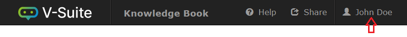

Preferences
The Knowledge Book application lets you store Knowledge Book preferences.

In the Knowledge Book application click on your user profile and click on My Preferences to modify Knowledge Book preferences. These preferences are stored with your user profile and will be applied irrelevant of which internet browser or computer you are using.

Viewer Preferences
Expand the Viewer Preferences accordion to modify your viewer preferences.
Viewer Preference |
Function |
Canvas Margin |
Sets the viewer's margin mode:
|
Lighting |
Sets the viewer's lighting mode:
|
Ambient Intensity |
This parameter adjusts the brightness of the Ambient lighting in the viewer. A higher intensity enhances model visibility and detail, while a lower intensity yields softer lighting. |
Edge Shader On |
When enabled, the Edge Shader emphasizes the outlines of the 3D model, enhancing the visibility of edges in complex models.
Note that the Edge Shader only applies when the viewer's projection mode is set to Perspective. |
Compass Off |
Select this option to hide the Compass by default. |
Slider Off |
Select this option to hide the Zoom Slider by default. |
Memory Limit |
Specifies the level of memory to be used when loading Knowledge Views. The memory used at Recommended and Maximum levels is dependent upon your browser.
This memory level is the limit of allowable memory by the viewer. Opening a small Knowledge View, for example, will still use minimal system resources even if the memory level is at Maximum.
CAUTION is advised with the Maximum memory level, as it may result in slower performance of the viewer. |
Scratch Pad Preferences
Expand the Scratch Pad Preferences accordion to modify your Scratch Pad preferences.
Scratch Pad Preference |
Function |
Font Family |
Allows you to choose the default text font. |
Font Color |
Allows you to choose the default text color. |
Font Size |
Allows you to choose the default text size. |
Fill Color |
Allows you to choose the default fill color for text blocks and shapes. |
Line Color |
Allows you to choose the default color of the border for shapes or the color of the line for the arrow and free draw mode. |
Line Width |
Allows you to choose the default width of the border for shapes or the color of the line for the arrow and free draw mode. |
UI Preferences
Expand the UI Preferences accordion to modify your Knowledge Book Viewer UI preferences.
UI Preference |
Function |
Display Inherited Attributes |
Select this option to make the Asset Information panel display attribute bars for parent assets in addition to the attribute bars shown for the picked asset. |
Auto Expand |
Allows you to select which of the Knowledge Book Viewer slide-out panels will automatically expand when its content changes. The automatic expand behavior can be set for the following panels: |
Click the Save button to save your preferences and apply these preferences to your current session. Click the Reset button to revert your preferences to application default settings.